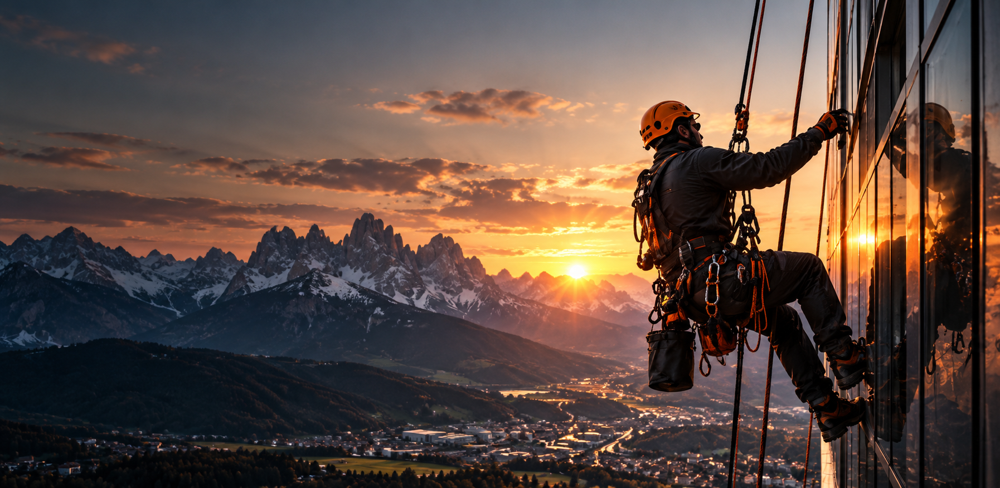
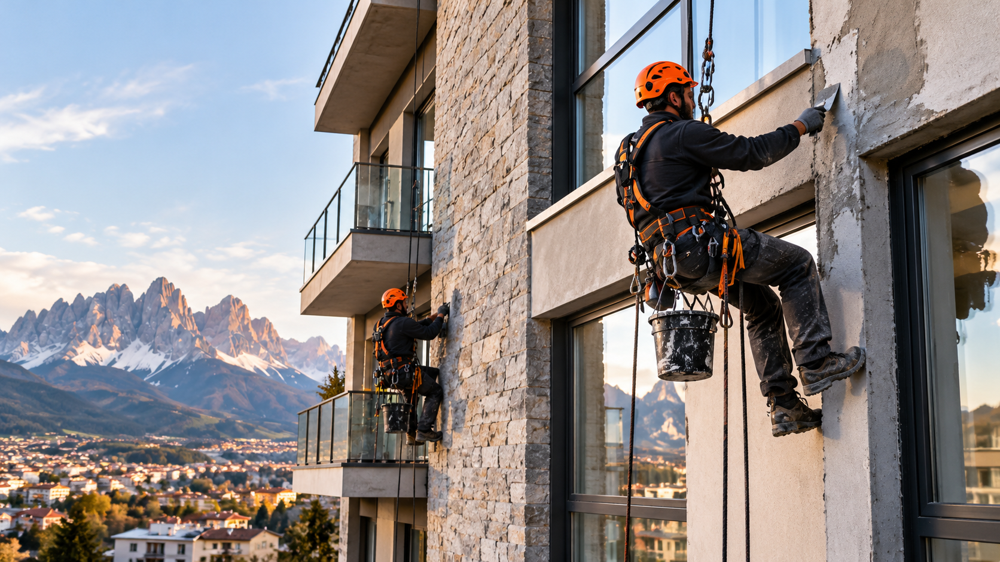
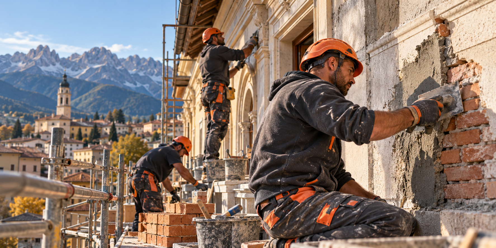

01 / 05
Coperture e tetti
Interventi e manutenzioni per mantenere coperture e tetti in buone condizioni.
↗
Precisione in quota. Risultati concreti.
Soluzioni edili affidabili, dalla copertura alla facciata. Affrontiamo ogni progetto con competenza, attenzione e un approccio pratico al lavoro.
Un nuovo percorso
ACROEDIL apre un nuovo capitolo insieme a Ideal Group.
Un percorso costruito sulla passione per il mestiere, sull'impegno quotidiano e sulla volontà di realizzare nuovi progetti nel settore dell'edilizia. Mettiamo attenzione in ogni intervento, dalle manutenzioni agli interventi in quota.
Parliamo del tuo progetto ↗Cosa facciamo
Interventi mirati per edifici e strutture, con un approccio concreto alle esigenze di ogni cantiere.
Interventi e manutenzioni per mantenere coperture e tetti in buone condizioni.
↗Lavori sulle superfici esterne degli edifici, con attenzione a finiture e dettagli.
↗Attività di manutenzione edile per affrontare le necessità dell'immobile.
↗Lavorazioni in muratura e interventi di ripristino, in base alle esigenze del progetto.
↗Accesso in quota per interventi in punti difficili da raggiungere con metodi tradizionali.
↗
Il nostro approccio
Ogni edificio ha le sue sfide. Valutiamo il lavoro, individuiamo l'intervento più adatto e lavoriamo con attenzione ai dettagli, alle persone e al contesto del cantiere.
Edilizia con visione
Che si tratti di una facciata, di una copertura o di un intervento in quota, il punto di partenza è sempre lo stesso: capire il bisogno e trovare una soluzione adeguata.
Descrivici il tuo intervento ↗
La nostra presenza
Il nostro punto di riferimento è Belluno, in Veneto. Contattaci per raccontarci il tuo progetto e verificare la disponibilità per un intervento nella tua zona.
Contatti
Hai bisogno di informazioni o vuoi parlare di un intervento? Contattaci per raccontarci il tuo progetto.
Belluno, Veneto
Italia
Per collaborazioni e richieste di lavoro, contattaci telefonicamente.